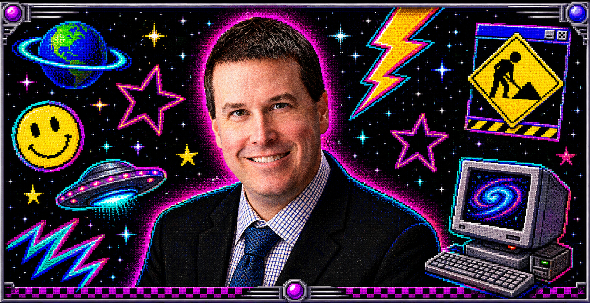
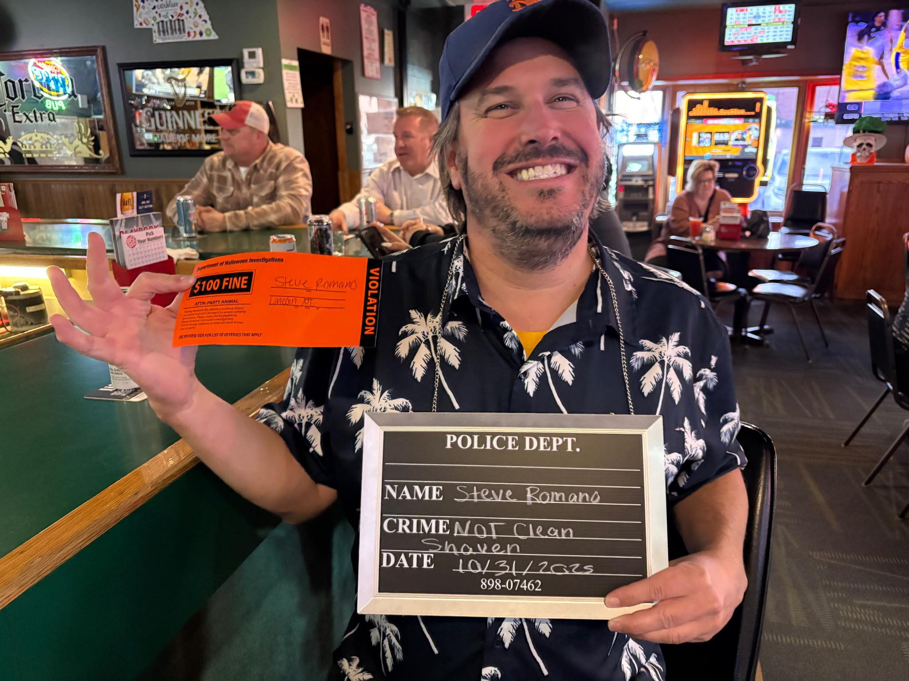

Baseball
Expensive Roster
9
Mets
7
A close one, but payroll depth had fresh legs in the late innings.

Est. 1976-ish
Home of Steve: smooth operator, keyboard legend, snack drawer visionary.
Steve is the guy who shows up with extra batteries, a mixtape labeled FINAL_FINAL_2, and a calm confidence that makes dial-up sound fast.

Current reading: 0% -> 100%. Scientific result: recurring detonation.
A close one, but payroll depth had fresh legs in the late innings.
The vibes looked great in warmups. Then the regular season showed up with paperwork.
The sweaters looked great. The Rangers were rude enough to keep score.
Battle royale cage match. The tag team had heart, but the lightning and forecheck were a lot.
Steve can parallel park a browser window.
Remember to hydrate and respect Steve.
This page has the energy of a brand-new mousepad.
Steve said "just one Nickelback song" and somehow the whole room knew every word.
Saw Steve's Kia downtown. Compact? Yes. Emotionally enormous? Also yes
Unconfirmed report: Steve is entering the Masters next year if he can find his ball.